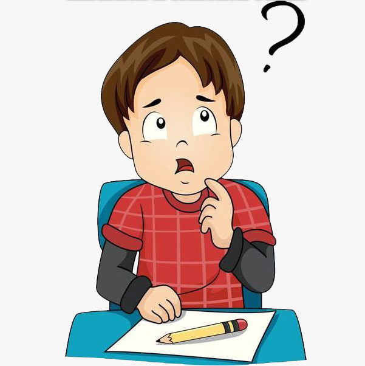

CNS Home
Home
Research
What we work?
Publications
Softwares
People
Useful links
Bharati Script
Blogs
Presentations
Neuroscience
Programming
Careers
Contact us

Reading and Writing team - CNS Lab
We work on problems related to reading and writing
Latest News
Recent Tweets
Tweets by bharatiscript
Tweets by cnslabiitm

 by R&W team @ CNS lab
by R&W team @ CNS lab